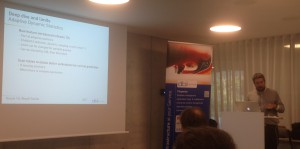

 At our bi-annual dbiXchange I was talking with Nicolas Jardot about his presentation on Result Cache (don’t forget Jérome witt session about RC at DOAG) where he has shown an unexpected behavior on ‘fetch first n rows queries’. That behavior – if it is not a bug – can also be a good thing when using offset queries.
The case
Everything is in the execution plan:
PLAN_TABLE_OUTPUT
---------------------------------------------------------------------------------------------------------------------------------
SQL_ID 799vsxdg75sm6, child number 0
-------------------------------------
select /*+ result_cache */ * from DEMO order by n fetch first 5 rows only
Plan hash value: 896528075
--------------------------------------------------------------------------------------------------------------------------------
| Id | Operation | Name | Starts | E-Rows | A-Rows | A-Time | Buffers | Reads |
--------------------------------------------------------------------------------------------------------------------------------
| 0 | SELECT STATEMENT | | 1 | | 5 |00:00:02.49 | 376 | 207 |
|* 1 | VIEW | | 1 | 100K| 5 |00:00:02.49 | 376 | 207 |
| 2 | RESULT CACHE | aanuwt05phj34078f253ht7x0x | 1 | | 100K|00:00:02.25 | 376 | 207 |
| 3 | WINDOW NOSORT | | 1 | 100K| 100K|00:00:01.72 | 376 | 207 |
| 4 | TABLE ACCESS BY INDEX ROWID| DEMO | 1 | 100K| 100K|00:00:00.99 | 376 | 207 |
| 5 | INDEX FULL SCAN | DEMO_PK | 1 | 100K| 100K|00:00:00.25 | 210 | 207 |
--------------------------------------------------------------------------------------------------------------------------------
Predicate Information (identified by operation id):
---------------------------------------------------
1 - filter("from$_subquery$_002"."rowlimit_$$_rownumber"<=5)
Result Cache Information (identified by operation id):
------------------------------------------------------
2 - column-count=4; dependencies=(DEMO.DEMO); attributes=(ordered); name="select /*+ result_cache */ * from DEMO "
I want to fetch only the first 5 rows, I access through an index scan so that I don’t need a sort. Then I expect to read only the 5 first entrie in the index – only a few blocks.
I want to use the result cache in case I run my query again. That should increase the performance of subsequent runs, but should not decrease the performance of the first run – except the small overhead to put 5 rows into the result cache.
But look at it again: I’ve read 100000 rows. The whole table. And 100000 have gone to the result cache:
SQL> select id,type,status,cache_id,row_count,name from v$result_cache_objects;
ID TYPE STATUS CACHE_ID ROW_COUNT NAME
---------- ---------- --------- ------------------------------ ---------- ----------------------
0 Dependency Published DEMO.DEMO 0 DEMO.DEMO
1 Result Published a46rp35xsfhzg6ukq622ax96xh 100000 select /*+ result_cach
Good or bad?
My first idea is that it is a bug. When I put a ‘result_cache’ hint, I expect the final result to go to result cache. Not an intermediate one. If I want an intermediate one, I can put the hint in a subquery. Of course, it’s bad to read all table rows when I explicitly want only 5 ones.
I addition to that, I expected that the behavior here would be the same as when forcing the table result cache mode. But it’s not the case. Setting ‘result_cache (mode force)’ instead of using the result_cache hint caches the final result – the 5 rows. Look, when setting both, I’ve two results going to the cache:
SQL> alter table DEMO result_cache (mode force);
Table altered.
SQL> select /*+ result_cache */ * from DEMO order by n fetch first 5 rows only;
N X
---------- ----------
1 1
2 .5
3 .3
4 .3
5 .2
SQL> select * from table(dbms_xplan.display_cursor(format=>'allstats last'));
PLAN_TABLE_OUTPUT
--------------------------------------------------------------------------------------------------------------------------------------------------------------------------------------------------------
SQL_ID 799vsxdg75sm6, child number 0
-------------------------------------
select /*+ result_cache */ * from DEMO order by n fetch first 5 rows only
Plan hash value: 896528075
------------------------------------------------------------------------------------------------------------------------
| Id | Operation | Name | Starts | E-Rows | A-Rows | A-Time | Buffers |
------------------------------------------------------------------------------------------------------------------------
| 0 | SELECT STATEMENT | | 1 | | 5 |00:00:02.46 | 376 |
| 1 | RESULT CACHE | 2j3s6quuam85248yh8458tcprb | 1 | | 5 |00:00:02.46 | 376 |
|* 2 | VIEW | | 1 | 100K| 5 |00:00:02.46 | 376 |
| 3 | RESULT CACHE | ch5d2dt62d5n485utqj03pftw2 | 1 | | 100K|00:00:02.22 | 376 |
| 4 | WINDOW NOSORT | | 1 | 100K| 100K|00:00:01.70 | 376 |
| 5 | TABLE ACCESS BY INDEX ROWID| DEMO | 1 | 100K| 100K|00:00:00.97 | 376 |
| 6 | INDEX FULL SCAN | DEMO_PK | 1 | 100K| 100K|00:00:00.24 | 210 |
------------------------------------------------------------------------------------------------------------------------
Predicate Information (identified by operation id):
---------------------------------------------------
2 - filter("from$_subquery$_002"."rowlimit_$$_rownumber" select id,type,status,cache_id,row_count,name from v$result_cache_objects;
ID TYPE STATUS CACHE_ID ROW_COUNT NAME
---------- ---------- --------- ------------------------------ ---------- ----------------------
0 Dependency Published DEMO.DEMO 0 DEMO.DEMO
1769 Result Published 9jdwtku77k9ap60x1anfqsd2ny 100000 select /*+ result_cach
1768 Result Published b4aa0hncfmd7bcdxnwf4mdyyj0 5 select /*+ result_cach
It think it’s bad. I’ll open a SR about it.
Pagination queries and Offset
When you have hundreds of lines to display to the user, you use pagination: display the first 15 lines with a ‘next’ button. Then the user can display the 15 next lines with the ‘next’ button, etc.
 In the days where a user had only one screen, that was easy. You run the query, get a cursor, fetch 15 lines from it. When the user press ‘next’ function we fetch 15 more lines. Exactly as when you use ‘set pause on’ in sqlplus.
That was perfect. But that changed. Still in client/server but on Windows, the users were able to run several applications at a time. They can open a cursor, and let it open for hours or even days. Then a new requirement came: a transaction must match the user interaction, or we leave too many resources idle.
It was even worse with web applications where you can start a use case and never finish it. Or use the ‘back’ button the the browser and break the flow of the application. The solution is stateless sessions. But then you can leave the cursor open. Or timeouts, but the user don’t like to re-start from begining because he has an urgent phone call.
With stateless sessions, you have to re-run the query. Whether you use rownum, row_number() or ‘fetch first … rows’ (see when you need the first_rows() hint in a previous blog post) the problem is that the query for the second fetch will need to read 30 lines and skip the first 15 ones. This is not optimal. More info from Markups Winand at http://use-the-index-luke.com/no-offset.
So the basic advice is: don’t use offset.
In the days where a user had only one screen, that was easy. You run the query, get a cursor, fetch 15 lines from it. When the user press ‘next’ function we fetch 15 more lines. Exactly as when you use ‘set pause on’ in sqlplus.
That was perfect. But that changed. Still in client/server but on Windows, the users were able to run several applications at a time. They can open a cursor, and let it open for hours or even days. Then a new requirement came: a transaction must match the user interaction, or we leave too many resources idle.
It was even worse with web applications where you can start a use case and never finish it. Or use the ‘back’ button the the browser and break the flow of the application. The solution is stateless sessions. But then you can leave the cursor open. Or timeouts, but the user don’t like to re-start from begining because he has an urgent phone call.
With stateless sessions, you have to re-run the query. Whether you use rownum, row_number() or ‘fetch first … rows’ (see when you need the first_rows() hint in a previous blog post) the problem is that the query for the second fetch will need to read 30 lines and skip the first 15 ones. This is not optimal. More info from Markups Winand at http://use-the-index-luke.com/no-offset.
So the basic advice is: don’t use offset.
Result Cache
However, we can take an advantage of the fact that result cache stores all the rows. The first run will put all rows in result cache and display only the first page. The second run will get the next rows from the result set without the need to re-run the query. Here is the first page:
SQL> variable next number
SQL> variable offset number
SQL> exec :offset := 0 ; :next:=5
PL/SQL procedure successfully completed.
SQL> select /*+ result_cache */ * from DEMO order by n offset :offset rows fetch next :next rows only;
N X
---------- ----------
1 1
2 .5
3 .3
4 .3
5 .2
SQL> select * from table(dbms_xplan.display_cursor(format=>'allstats last'));
PLAN_TABLE_OUTPUT
------------------------------------------------------------------------------------------------------------------------------------
SQL_ID 36gjax1bq229s, child number 0
-------------------------------------
select /*+ result_cache */ * from DEMO order by n offset :offset rows
fetch next :next rows only
Plan hash value: 1397896352
---------------------------------------------------------------------------------------------------------------------------------
| Id | Operation | Name | Starts | E-Rows | A-Rows | A-Time | Buffers | Reads |
---------------------------------------------------------------------------------------------------------------------------------
| 0 | SELECT STATEMENT | | 1 | | 5 |00:00:02.51 | 376 | 208 |
|* 1 | FILTER | | 1 | | 5 |00:00:02.51 | 376 | 208 |
|* 2 | VIEW | | 1 | 100K| 5 |00:00:02.51 | 376 | 208 |
| 3 | RESULT CACHE | 18fnpv7tfn444bghaxs5mb20kk | 1 | | 100K|00:00:02.26 | 376 | 208 |
| 4 | WINDOW NOSORT | | 1 | 100K| 100K|00:00:01.74 | 376 | 208 |
| 5 | TABLE ACCESS BY INDEX ROWID| DEMO | 1 | 100K| 100K|00:00:01.00 | 376 | 208 |
| 6 | INDEX FULL SCAN | DEMO_PK | 1 | 100K| 100K|00:00:00.25 | 210 | 208 |
---------------------------------------------------------------------------------------------------------------------------------
Predicate Information (identified by operation id):
---------------------------------------------------
1 - filter(:OFFSET=0) THEN FLOOR(TO_NUMBER(TO_CHAR(:OFFSET))) ELSE 0 END +:NEXT)
2 - filter(("from$_subquery$_002"."rowlimit_$$_rownumber"=0) THEN
FLOOR(TO_NUMBER(TO_CHAR(:OFFSET))) ELSE 0 END +:NEXT AND "from$_subquery$_002"."rowlimit_$$_rownumber">:OFFSET))
Here is the second page:
SQL> exec :offset := 5 ; :next:=5
PL/SQL procedure successfully completed.
SQL> select /*+ result_cache */ * from DEMO order by n offset :offset rows fetch next :next rows only;
N X
---------- ----------
6 .2
7 .1
8 .1
9 .1
10 .1
SQL> select * from table(dbms_xplan.display_cursor(format=>'allstats last'));
PLAN_TABLE_OUTPUT
--------------------------------------------------------------------------------------------------------------------------------------------------------------------------------------------------------
SQL_ID 36gjax1bq229s, child number 0
-------------------------------------
select /*+ result_cache */ * from DEMO order by n offset :offset rows
fetch next :next rows only
Plan hash value: 1397896352
--------------------------------------------------------------------------------------------------------------
| Id | Operation | Name | Starts | E-Rows | A-Rows | A-Time |
--------------------------------------------------------------------------------------------------------------
| 0 | SELECT STATEMENT | | 1 | | 5 |00:00:00.48 |
|* 1 | FILTER | | 1 | | 5 |00:00:00.48 |
|* 2 | VIEW | | 1 | 100K| 5 |00:00:00.48 |
| 3 | RESULT CACHE | 18fnpv7tfn444bghaxs5mb20kk | 1 | | 100K|00:00:00.24 |
| 4 | WINDOW NOSORT | | 0 | 100K| 0 |00:00:00.01 |
| 5 | TABLE ACCESS BY INDEX ROWID| DEMO | 0 | 100K| 0 |00:00:00.01 |
| 6 | INDEX FULL SCAN | DEMO_PK | 0 | 100K| 0 |00:00:00.01 |
--------------------------------------------------------------------------------------------------------------
Predicate Information (identified by operation id):
---------------------------------------------------
1 - filter(:OFFSET=0) THEN FLOOR(TO_NUMBER(TO_CHAR(:OFFSET))) ELSE 0 END +:NEXT)
2 - filter(("from$_subquery$_002"."rowlimit_$$_rownumber"=0) THEN
FLOOR(TO_NUMBER(TO_CHAR(:OFFSET))) ELSE 0 END +:NEXT AND
"from$_subquery$_002"."rowlimit_$$_rownumber">:OFFSET))
The second run had no rows to read from the table.
If we know that the user will never go further than a few pages, the we can add a subquery with rownum.
Here is a pagination query that get at maximum 30 rows paged 5 by 5:
SQL> variable next number
SQL> variable offset number
SQL> exec :offset := 0 ; :next:=5
PL/SQL procedure successfully completed.
SQL> select * from (
2 select /*+ result_cache */ * from (
3 select * from DEMO order by n fetch first 30 rows only
4 ) order by n offset :offset rows fetch next :next rows only
5 )
6 /
N X
---------- ----------
1 1
2 .5
3 .3
4 .3
5 .2
SQL> select * from table(dbms_xplan.display_cursor(format=>'allstats last'));
PLAN_TABLE_OUTPUT
------------------------------------------------------------------------------------------------------------------------------------
SQL_ID 1yubnzwpd2z2g, child number 0
-------------------------------------
select * from ( select /*+ result_cache */ * from ( select * from
DEMO order by n fetch first 30 rows only ) order by n offset :offset
rows fetch next :next rows only )
------------------------------------------------------------------------------------------------------------------------------------
| Id | Operation | Name | Starts | E-Rows | A-Rows | A-Time | Buffers | Reads |
------------------------------------------------------------------------------------------------------------------------------------
| 0 | SELECT STATEMENT | | 1 | | 5 |00:00:00.01 | 5 | 1 |
|* 1 | FILTER | | 1 | | 5 |00:00:00.01 | 5 | 1 |
|* 2 | VIEW | | 1 | 30 | 5 |00:00:00.01 | 5 | 1 |
| 3 | RESULT CACHE | gbwdtyz67n3kk0qkgw86s4jk67 | 1 | | 30 |00:00:00.01 | 5 | 1 |
| 4 | WINDOW NOSORT | | 1 | 30 | 30 |00:00:00.01 | 5 | 1 |
| 5 | VIEW | | 1 | 30 | 30 |00:00:00.01 | 5 | 1 |
|* 6 | VIEW | | 1 | 30 | 30 |00:00:00.01 | 5 | 1 |
|* 7 | WINDOW NOSORT STOPKEY | | 1 | 100K| 30 |00:00:00.01 | 5 | 1 |
| 8 | TABLE ACCESS BY INDEX ROWID| DEMO | 1 | 100K| 31 |00:00:00.01 | 5 | 1 |
| 9 | INDEX FULL SCAN | DEMO_PK | 1 | 100K| 31 |00:00:00.01 | 3 | 1 |
------------------------------------------------------------------------------------------------------------------------------------
SQL> exec :offset := 5 ; :next:=5
PL/SQL procedure successfully completed.
SQL> select * from (
2 select /*+ result_cache */ * from (
3 select * from DEMO order by n fetch first 30 rows only
4 ) order by n offset :offset rows fetch next :next rows only
5 )
6 /
N X
---------- ----------
6 .2
7 .1
8 .1
9 .1
10 .1
SQL> select * from table(dbms_xplan.display_cursor(format=>'allstats last'));
PLAN_TABLE_OUTPUT
------------------------------------------------------------------------------------------------------------------------------------
SQL_ID 1yubnzwpd2z2g, child number 0
-------------------------------------
select * from ( select /*+ result_cache */ * from ( select * from
DEMO order by n fetch first 30 rows only ) order by n offset :offset
rows fetch next :next rows only )
-----------------------------------------------------------------------------------------------------------------
| Id | Operation | Name | Starts | E-Rows | A-Rows | A-Time |
-----------------------------------------------------------------------------------------------------------------
| 0 | SELECT STATEMENT | | 1 | | 5 |00:00:00.01 |
|* 1 | FILTER | | 1 | | 5 |00:00:00.01 |
|* 2 | VIEW | | 1 | 30 | 5 |00:00:00.01 |
| 3 | RESULT CACHE | gbwdtyz67n3kk0qkgw86s4jk67 | 1 | | 30 |00:00:00.01 |
| 4 | WINDOW NOSORT | | 0 | 30 | 0 |00:00:00.01 |
| 5 | VIEW | | 0 | 30 | 0 |00:00:00.01 |
|* 6 | VIEW | | 0 | 30 | 0 |00:00:00.01 |
|* 7 | WINDOW NOSORT STOPKEY | | 0 | 100K| 0 |00:00:00.01 |
| 8 | TABLE ACCESS BY INDEX ROWID| DEMO | 0 | 100K| 0 |00:00:00.01 |
| 9 | INDEX FULL SCAN | DEMO_PK | 0 | 100K| 0 |00:00:00.01 |
-----------------------------------------------------------------------------------------------------------------
The first run reads 30 rows, put them into the result cache and returns the first 5. The second run get the first 10 rows from result cache, skips the first 5 and returns next 5 ones.
So what?
We have a solution to use offset in an optimal way, but I don’t know if is an expected behavior, bug or side effect. The same idea can be done with rownum and subqueries. You have also to think about how static the base tables are. the ‘snapshot’ hint may be use to allow stale results (see previous blog post) but not documented yet.
We know a lot of bugs and side effects about result cache. We know a lot of unexpected behavior and performance issue about first rows. Search “first rows” or “result cache” on this blog, or Jonathan Lewis blog, or on MOS and you will see that you can use it only when you have tested the cases where you use it.
Franck
is it expected behavior of Oracle 12.1.0.2 to read a whole table/index to fetch first 5 rows only?
We have an issue with degradation of queries performance after upgrading to 12c. Our application uses Entity Framework and the provider generates queries automatically (the architecture is not a topic of this discussion). So the former top n query select from (select … order) where rownum
Why Oracle need to read the whole table (and a-rows show it really do this) just to discard them later? And why so huge costs estimations.In the original post of Tom, the autotrace output shows
for the same setup.On my test system, the 10053 trace shows that Optimizer evaluated the cost of access via full index scan to something like 1500 and chosen the full table scan with the costs of ca. 1000
Why autotrace on the tom example and on my test env. so different (actually I reproduced his setup)?And of course, any idea how we can mitigate this issue after migration (again, the queries are generated during runtime by Entity Framework provider).
I would really appreciate your answer
Best regards
Oleg
Franck,
my I sent you the question per E-Mail? If I try to copy/paste to the blog window – the result loose the original format.
Sorry for this
Oleg
Hi Oleg, I’ve added the <code> and </code> tags and formatting is ok.
Thanks Franck,
I thinks as I tried to edit unformatted output I deleted one of the query. So below are the queries again – I would really appreciate you input. I can sent you the output of bothe 10053 traces – a bit different set up, but the point is a huge costs and actually Oracle will change to full index scan at some point but only due to the huge cost of sorting – so if I do select * instead of select object_id, created – the cost of sorting is more than 2000 and Oracle change to full index scan, but this is still unexpected – we expect the cost something comparable to either ones of select …. where rownum <= or costs of Toms example (probably tom used 12.1.0.1?)
I was comparing the original query of Tom, with HIS output of the execution plan
Hi Franck,
I found your blog entry searching for this completely unexpected behavior – instead of eliminating (5) rows with stop key, oracle scans the whole table/index/result cache first – which in my opinion is very inefficient. Oracle does not do this for the old version of the query – when I manually select then sort then select where rownum <=5 – in this case Oracle correctly uses stop key operation. It seams that in the Tom's post at least during cost estimation Oracle uses 5 rows and not the all rows in the target table.
I just wonder, you definitely saw this behavior as you wrote this post and explicitly pointed at it. Aside from the fact if Oracle caches all this rows or not – was you not wondering why oracle simple does not eliminate all rows earlier ?
Best regards
Oleg
Hi Oleg, I don’t know which ‘Tom post’ you refer to. You are talking about ‘autotrace’ but be careful with autotrace as it may show different plan that the one that is actually used. About “oracle scans the whole table/index/result cache first – which in my opinion is very inefficient” this is a cost based decision. With high latency disks but large PGA, it may be faster to do a table full scan (or index fast full scan) which is multiblock I/O and sort it later rather than an index range scan which is done row by row. But for sure, the ptimizer mode should be first rows there. Regards, Franck.